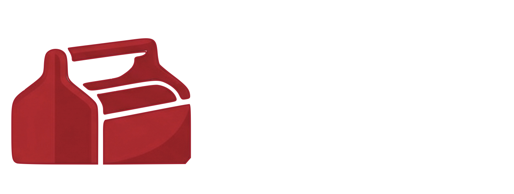
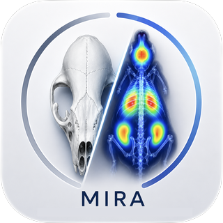
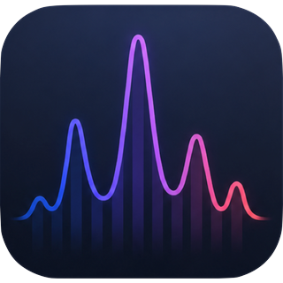
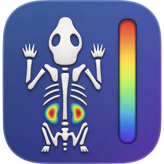
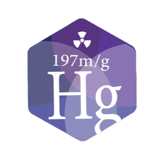
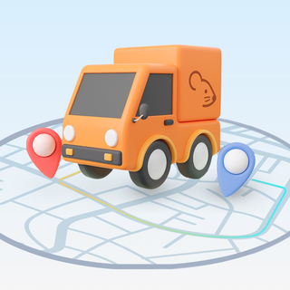
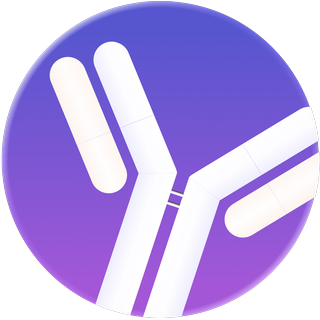
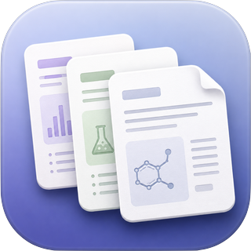

Chemist by training, imaging scientist by trade. I manage UBC's Preclinical Imaging Research Facility — PET, SPECT, CT, optical and microCT — and build the open software behind it, giving research labs custom tools to move from data to discovery, faster.

Open software that streamlines lab workflows — image analysis, calibration, monitoring and inventory. Free for academic & research labs.
Chemist by training, imaging scientist by trade. I manage UBC's Preclinical Imaging Research Facility at the Centre for Comparative Medicine, leading the strategy and daily operations of multimodal imaging platforms — PET, SPECT, CT, and, more recently, optical imaging and microCT — across multiple campus sites.
My background is unusually broad for the field: it spans medicinal chemistry, radiopharmaceutical development, molecular modelling, and quantitative preclinical imaging. That range lets me support investigators end to end — from experimental design and acquisition through image analysis and data interpretation — while keeping complex, multi-project programs compliant, on budget, and running smoothly.
I also build my own software. With Python for analysis and modelling, and modern web technologies — HTML, CSS, JavaScript and React — for portals and dashboards, I develop tools that automate and modernize lab workflows: quantitative image analysis, SPECT calibration, tumour monitoring, and inventory management. These are gathered under LabToolBox and shared openly with academic and research labs.
Design matters to me as much as function. I design and build websites, and create scientific communication material — conference posters, graphical abstracts, and figures — that make complex research clear and compelling.
Two decades spanning medicinal chemistry, radiopharmaceutical science, and quantitative preclinical imaging — increasingly paired with the software that runs underneath it.
Lead strategy and daily operations of UBC's multimodal imaging facility across PET, SPECT, CT, optical and microCT, over multiple campus sites. Own budgeting and regulatory compliance, and guide investigators on experimental design, quantitative image analysis, and data interpretation at every stage. Build custom Python tools that automate quantification, calibration, and data management to cut manual processing time and improve reproducibility.
Designated trainer and technical resource for the Lago X optical imager. Train researchers across labs to plan and run fluorescence/bioluminescence studies, develop and standardize acquisition and analysis protocols, and troubleshoot experiments to ensure reliable, reproducible data.
Advised a UBC lab establishing a new microCT (MILabs) facility — site setup, workflow optimization, and operational best practices during its first year — drawing on prior MILabs and multimodal imaging experience.
Helped build and expand UBC's preclinical PET, SPECT, and CT platforms in collaboration with investigators across UBC, TRIUMF, and local biotech. Oversaw instrument maintenance and workflow optimization, trained users, and supported study design, analysis, and scientific reporting — with full compliance to safety and ethics standards. This foundation became the facility I now lead.
On independent fellowship funding, designed, synthesized, and biologically evaluated small-molecule radiotracers for theranostic applications in Alzheimer's disease. Characterized compounds through live-cell assays, protein-binding and aggregation studies, enzyme inhibition, and cytotoxicity, and contributed to molecular modelling and structure-based drug design.
Targeted the Cannabinoid Receptor 2 (CB2), a GPCR of pharmacological interest, applying homology modelling, virtual screening, molecular docking, and binding free-energy prediction to identify novel CB2 agonists.
Designed, synthesized, and characterized drug-like molecules as candidate radiotracers for Alzheimer's disease, supported by target validation, metal–protein titrations, turbidity assays, circular dichroism, and fluorescence assays. Built chemoinformatics and virtual-screening pipelines to triage large libraries by pharmacokinetic favourability.
Optimized synthetic strategies for incorporating ¹²³I into small molecules for in vivo imaging (ICMAB-CSIC), and studied amyloid-disease proteins — amyloid-β, amylin, transthyretin — and their interactions with small-molecule drug leads (IQS).
Developed analytical methods for drugs, biogas, polymers, and fragrances using HPLC, GC, and GC/MS, and produced detailed analytical reports.

End-to-end quantitative analysis of preclinical PET/SPECT/CT — from raw scans to time-activity curves, %ID/g, SUV, and dosimetry, in standardized, regulator-ready reports.

Interactive viewing of multi-dimensional imaging data — exploring volumes, spectra, and time-series side by side to turn complex datasets into insight.

A browser-based composer that standardizes preclinical imaging figures — replacing fragmented PowerPoint, Illustrator and Photoshop workflows with row × time-point grids, reference colorbars, consistent typography, and journal-ready export.

Models the decay of Mercury-197 isomers (¹⁹⁷mHg → ¹⁹⁷gHg) with Bateman equations — supporting dual-isomer SPECT theranostics and image-guided dosimetry.

A portal for submitting, tracking, and documenting animal transfers between preclinical facilities — replacing email and paper with a clear, auditable record trail.
Tracking of radioactive isotopes, decay, and usage across the facility — automating inventory and QC records to keep the lab safe, compliant, and audit-ready.
One tool for the whole SOP lifecycle — structured authoring with auto-numbered steps, branded templates, and version & status control (Draft → Active → Retired), with a searchable library that regenerates audit-ready Word and PDF files. A single HTML file that runs offline.

A lightweight database for the lab's antibody inventory — cataloguing stocks, suppliers, lots, and validation details so reagents are easy to find, track, and reorder.

A library of branded document templates for the lab — lab reports, protocols, user manuals, and manuscripts — so routine paperwork starts polished, consistent, and on-brand.
More open-source work on github.com/cristinarod2, plus teaching materials for PHAR518.
Quantitative, translational molecular imaging — making what happens inside a living system measurable, reproducible, and useful for developing new medicines.
Rigorous quantification across PET, SPECT, and CT — calibration, standardized workflows, and the methodology that makes imaging numbers trustworthy.
Method development for emerging theranostics, including dual-isomer Hg-197m/g SPECT imaging, kinetic modeling, and image-guided dosimetry.
Multi-time-point in vivo and ex vivo imaging workflows that track biology over time with consistency and statistical power.
Bridging preclinical imaging and quantitative analysis to support drug development — moving molecules toward medicines.
60+ peer-reviewed publications — full record on Google Scholar and ORCID · facility publications at invivoimaging.ca.
Whether you're planning an imaging study, need scientific software built, or want to bring LabToolBox into your lab — I'd be glad to talk.